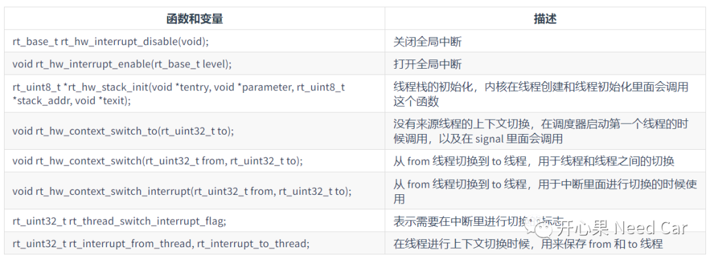
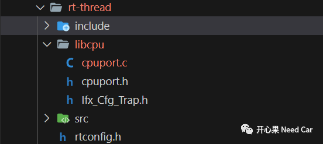

开心果 Need Car · 2023-06-27T08:34:00+08:00 · 微信原文
搞嵌入式开发，了解操作系统（OS：Operating System）必不可少。对于初学者，如果直接学习商业版的Autosar OS，难度系数大，有些老虎吃天的感觉。而OS的深入理解，最核心的就是CPU架构的移植，说白了就是让目标操作系统在目标芯片上跑起来。汽车嵌入式领域，使用的芯片多种多样，对应的CPU架构也有所不同，eg：ARM、Cortex-M等等。在RT-Thread的移植中，需要结合使用芯片架构进行适配，以此实现OS的线程切换功能。在RT-Thread中，libcpu抽象了不同芯片的CPU架构。
本文记录了RT-Thread在Hightec+TC375TP上的移植过程，相比起其他移植资料，本文的特点：
1、基于Hightec+TC375TP移植；
1、libcpu需要移植哪些API


rt_hw_stack_init()接口实现
实现内容如下：
rt_uint8_t *rt_hw_stack_init(void *tentry,void *parameter,rt_uint8_t *stack_addr,void *texit){unsigned long *lower_csa = NULL;unsigned long *upper_csa = NULL;UpperCtx_Ptr upperCtxPtr = NULL;rt_hw_interrupt_disable();{__dsync();/* 使用两个空闲CSA存储线程上层上下文和下层上下文 */upper_csa = LINKWORD_TO_ADDRESS(__mfcr(CPU_FCX));if( NULL != upper_csa ){/* 查找上层上下文链接的下一个CSA地址 */lower_csa = LINKWORD_TO_ADDRESS( upper_csa[ 0 ] );}/* 如果成功分配两个CSA，则移动FCX */if( ( NULL != lower_csa ) && ( NULL != upper_csa )){/* 将已经使用的两个CSA，从FCX列表中移除 */__disable();__dsync();__mtcr( CPU_FCX, lower_csa[ 0 ] );__isync();__enable();}else{__svlcx();}}rt_hw_interrupt_enable((rt_base_t)RT_NULL);/* 保存线程退出函数入口 */upper_csa[ 3 ] = ( unsigned long )texit;/* 保存栈指针，对应A[10]寄存器 */upper_csa[ 2 ] = ( unsigned long )stack_addr;/* 保存当前线程PSW寄存器的初始状态 */upper_csa[ 1 ] = TRICORE_SYSTEM_PROGRAM_STATUS_WORD;/* 保存函数入参，对应全局寄存器A[4] */lower_csa[ 8 ] = ( unsigned long ) parameter;/* 保存 PC 指针，A[11]*/lower_csa[ 1 ] = ( unsigned long ) tentry;/* PCXI指向上层上下文 */lower_csa[ 0 ] = ( TRICORE_INITIAL_PCXI_UPPER_CONTEXT_WORD | ( unsigned long ) ADDRESS_TO_LINKWORD( upper_csa ) );/* 将下层上下文的地址保存到栈顶 */*((unsigned long * )stack_addr) = (unsigned long) ADDRESS_TO_LINKWORD( lower_csa );__dsync();return ((unsigned long)stack_addr);}
rt_hw_context_switch_to()接口实现
void rt_hw_context_switch_to(rt_ubase_t to){rt_base_t level;level = rt_hw_interrupt_disable();/* 启动第一个线程 */rt_interrupt_to_thread = (*((unsigned long *)to));/* 主动触发异常，进入Trap0，进行线程切换 */__syscall( 0 );rt_hw_interrupt_enable(level);}
rt_hw_context_switch_interrupt()接口实现
void rt_hw_context_switch_interrupt(rt_ubase_t from, rt_ubase_t to){if(rt_thread_switch_interrupt_flag == 0){/* 将from和to线程保存到对应的全局变量中，以便于后续线程切换 */rt_interrupt_from_thread = (*( (unsigned long *)from ));rt_interrupt_to_thread = (*((unsigned long *)to));/* 置位中断切换线程Flag */rt_thread_switch_interrupt_flag = 1;__dsync();/* SETR置位，触发中断，中断函数中请求线程切换 */GPSR[TRICORE_CPU_ID]->B.SETR = 1;__isync();}}
rt_hw_context_switch()接口实现
void rt_hw_context_switch(rt_ubase_t from, rt_ubase_t to){rt_base_t level;level = rt_hw_interrupt_disable();/* 将from和to线程保存到对应的全局变量中，以便于后续线程切换 */rt_interrupt_from_thread = (*( (unsigned long *)from ));rt_interrupt_to_thread = (*((unsigned long *)to));rt_hw_interrupt_enable(level);/* 主动触发异常，进入Trap0，进行线程切换 */__syscall( 0 );}
rt_hw_interrupt_enable()接口实现
void rt_hw_interrupt_enable(rt_base_t level){restoreInterrupts((boolean)level);}
rt_hw_interrupt_disable()接口实现
rt_base_t rt_hw_interrupt_disable(void){rt_base_t level;level = IfxCpu_disableInterrupts();return level;}
trigger_scheduling()接口实现
注意，此接口多处调用，使用内联。
inline void trigger_scheduling(void){UpperCtx_Ptr ptUpperCtx = NULL;uint8 idx = 0x00;__dsync();/* 获取当前线程的 CSA上层上下文地址 */ptUpperCtx = LINKWORD_TO_ADDRESS( __mfcr( CPU_PCXI ) );__isync();/* 如果from线程不为空 */if(rt_interrupt_from_thread){__dsync();/* 将当前线程的Linkwork保存到From线程 */*( (unsigned long *)rt_interrupt_from_thread ) = ptUpperCtx->_PCXI;GPSR[TRICORE_CPU_ID]->B.SETR = 0;}/* 将to线程的linkword赋给当前线程的LinkWord*/ptUpperCtx->_PCXI = *( (unsigned long *)rt_interrupt_to_thread );/* 如果中断触发Flag置位，则复位 */if(rt_thread_switch_interrupt_flag){rt_thread_switch_interrupt_flag = 0;}__isync();}
系统心跳tricore_systick_handler()接口实现
__attribute__((noinline)) static void tricore_systick_handler( void ){/* enter interrupt */rt_interrupt_enter();IfxStm_Timer_acknowledgeTimerIrq(&tricore_timers[TRICORE_CPU_ID]);rt_tick_increase();/* leave interrupt */rt_interrupt_leave();}IFX_INTERRUPT(KERNEL_INTERRUPT, 0, 2){tricore_systick_handler();}
中断线程切换例程实现
IFX_INTERRUPT(KERNEL_YIELD, 0, 1){trigger_scheduling();}
2、实现过程中的注意点
（1）中断优先级配置及例程实现要保持匹配
eg:定时器配置的中断优先级为2，在实现中断例程时也需要是2
系统心跳初始化中断配置为2，如下所示：
void rt_hw_systick_init( void ){IfxStm_Timer_Config timer_config;IfxStm_Timer_initConfig(&timer_config, STMs[TRICORE_CPU_ID]);timer_config.base.frequency = RT_TICK_PER_SECOND;timer_config.base.isrPriority = 2;IfxStm_Timer_init(&tricore_timers[TRICORE_CPU_ID], &timer_config);IfxStm_Timer_run(&tricore_timers[TRICORE_CPU_ID]);}
中断例程实现时，中断例程优先级也需要为2，如下所示：
IFX_INTERRUPT(KERNEL_INTERRUPT, 0, 2){tricore_systick_handler();}
IFX_INLINE void tricore_trap_yield_for_task(IfxCpu_Trap trapInfo){switch(trapInfo.tId){case 0:trigger_scheduling();break;default:/* Unimplemented trap called. *//* TODO*/break;}}
void IfxCpu_Trap_systemCall_Cpu0(uint32 tin){volatile IfxCpu_Trap trapWatch;trapWatch = IfxCpu_Trap_extractTrapInfo(IfxCpu_Trap_Class_systemCall, tin);IFX_CFG_CPU_TRAP_SYSCALL_CPU0_HOOK(trapWatch);__asm("rslcx");__asm("rfe");}
3、本文源码链接
本文源码链接：
往期精彩回顾